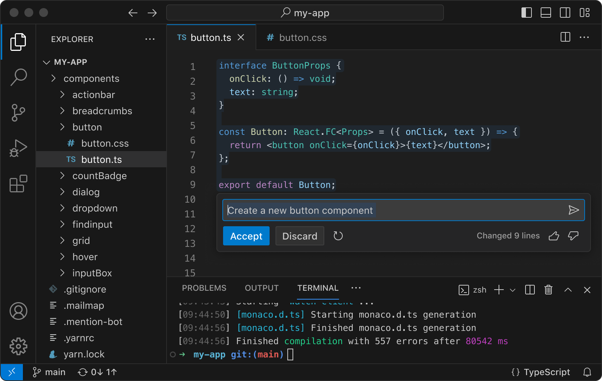

Free. Built on open source. Runs everywhere.
Code
Code
Editing.
Redefined.
Download For MacOS
web, Insider edition, or Other platform
By using VS Code, you agree to its
license
and
privacy statement.
